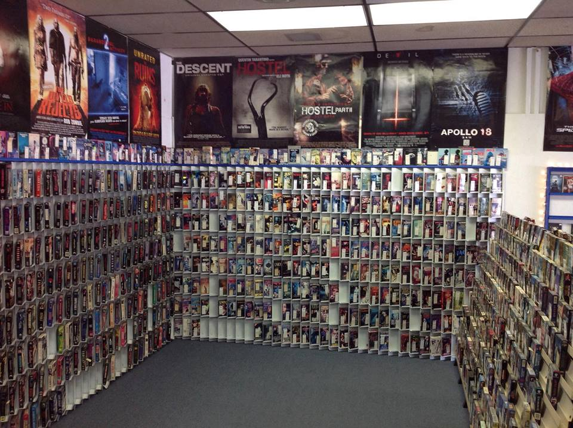

'Taste of the World Cafe' is a restaurant that has diverse menu offerings and serves generous portions. They introduced a new menu at the start of the year. This project involves analysis of the customer data to see which menu items are doing well / not well and what the top customers seem to like.

The Maven Movies SQL project revolves around providing updated information to the insurance company's underwriters for policy renewal.
Leveraging SQL skills, the project involves extracting and analyzing data from various tables within the Maven Movies database to address specific queries raised
by the underwriters.The project aims to fulfill the underwriters' requirements efficiently, ensuring accurate and timely provision of information essential for policy renewal.